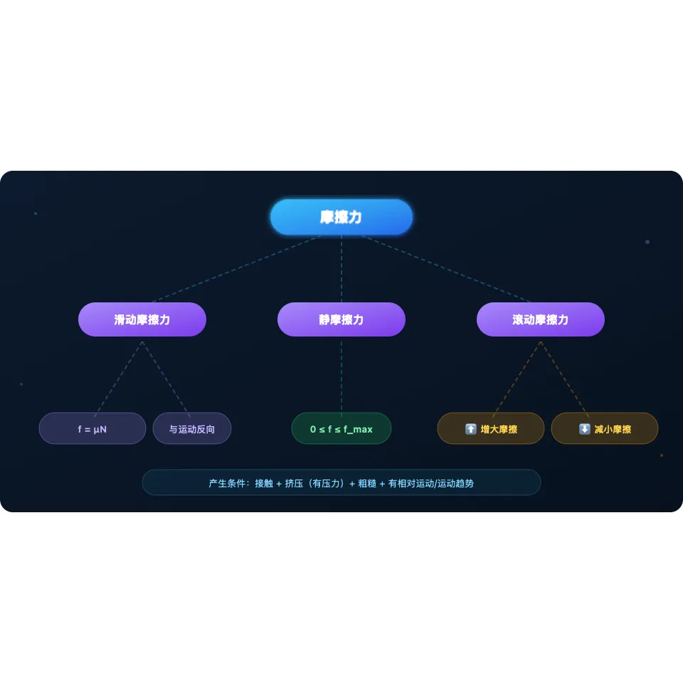
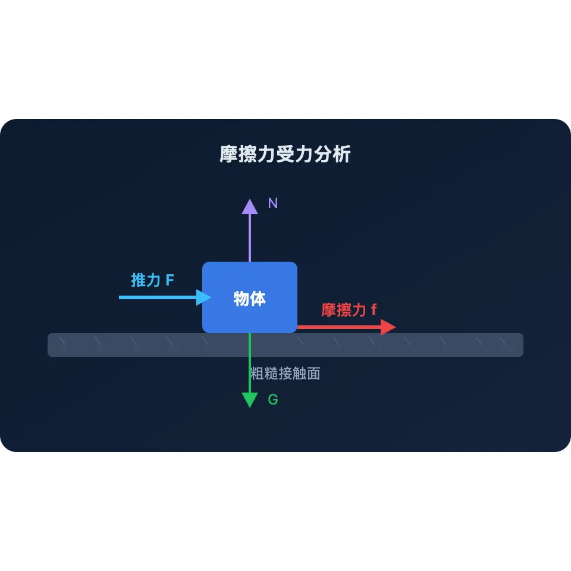
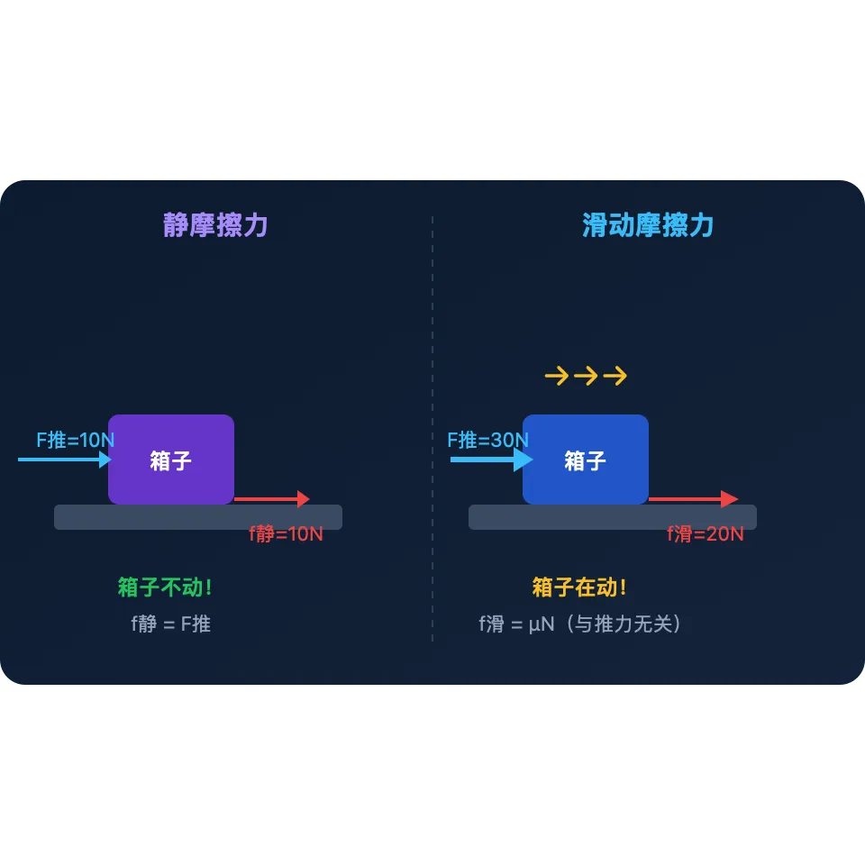
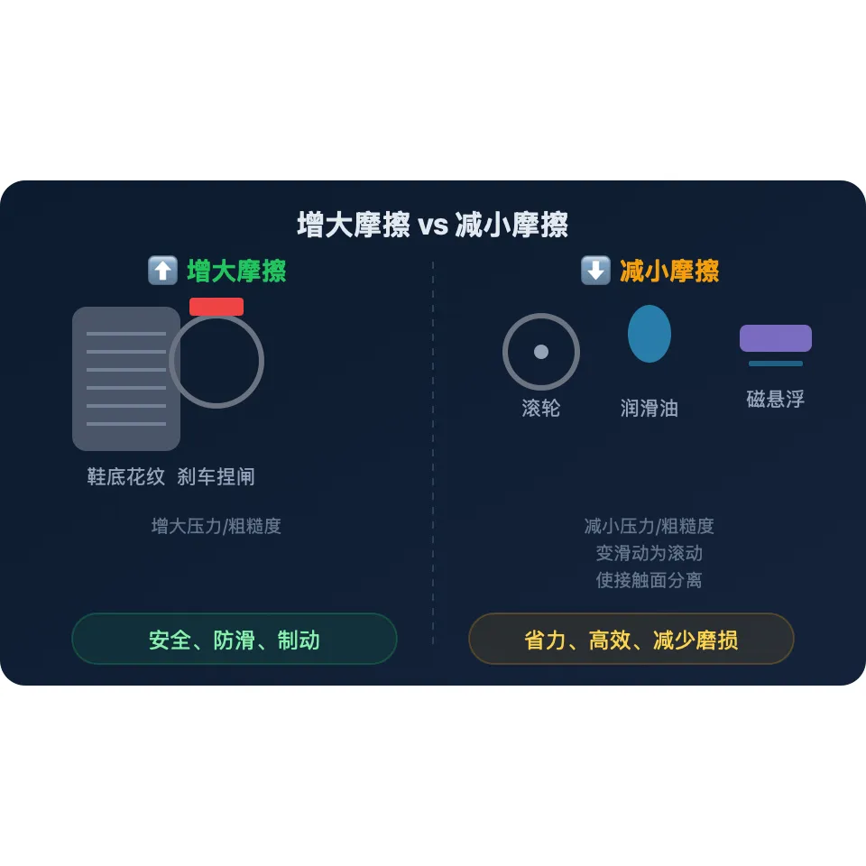

为什么冰面上走路容易滑倒？为什么汽车刹车能停下来？摩擦力无处不在——它既阻碍运动，也让我们站稳脚跟。

先选一个你关心的问题。后面的例子、提示和 AI 学伴都会围绕这个问题来帮你推进。
选择或输入后，本课会围绕你的问题展开。
先试试这几道题，看看你现在对摩擦力了解多少。答错没关系，这正是我们今天要学的！
1. 推一个箱子，松手后箱子慢慢停下来，是什么力让它减速的？
2. 在冰面上比在水泥地上难走路，主要是因为冰面…
想象一下：你推着一个行李箱在机场走，松手后箱子不会一直滑下去——它会慢慢停下来。这个"阻碍箱子运动"的力，就是摩擦力。

🤔 ConcepTest：一本书放在水平桌面上静止不动，它受到摩擦力吗？
摩擦力发生在微观层面——接触面上无数微小的凹凸互相咬合，形成阻力。表面越粗糙，"咬合"越紧密。
人走路靠的是静摩擦力（脚和地面的"咬合"），刹车靠的是滑动摩擦力。没有摩擦力，我们寸步难行！
滑动摩擦力只看压力和粗糙程度，不管你滑得快还是慢——这在很多同学的直觉中是反常识的。
把箱子竖着放还是横着放，摩擦力大小不变！因为接触面积虽然变了，但压力分布也变了，总效果一样。
摩擦力不只有一种！根据物体是否已经在"动"，摩擦力分为两类：

🤔 ConcepTest：用10N的力推箱子没推动，静摩擦力是多少？
拖动书本，调节施加的力和表面粗糙程度，观察摩擦力的变化。
💡 操作提示：先选择"摩擦力"标签页，拖动书本观察摩擦力大小变化。试试在不同粗糙程度的表面上推动书本！
调节压力和表面粗糙程度，观察滑动摩擦力如何变化。拖动滑块，实时查看结果！
摩擦力既可以是"帮手"也可以是"对手"。我们需要根据具体情况决定增大还是减小它。

🎯 目的：防止打滑，确保安全
🎯 目的：减少损耗，提高效率
🤔 ConcepTest：以下哪种做法是为了增大摩擦？
学完了，来检验一下自己掌握得怎么样！
1. 用20N的力推地上的箱子，箱子匀速前进，此时箱子受到的滑动摩擦力是多少？
2. 在同样的表面上，把箱子里的东西拿出来一半（压力减小），滑动摩擦力会…
3. 磁悬浮列车利用什么原理减小摩擦？
根据你的掌握程度选择练习。建议从基础开始，逐步挑战！
🔄 迁移思考：如果没有摩擦力，我们的生活会变成什么样？（提示：你将无法行走、无法拿住任何东西、汽车无法刹车…）
本节点的前置、后续和同域知识由标准知识图谱模块自动渲染。